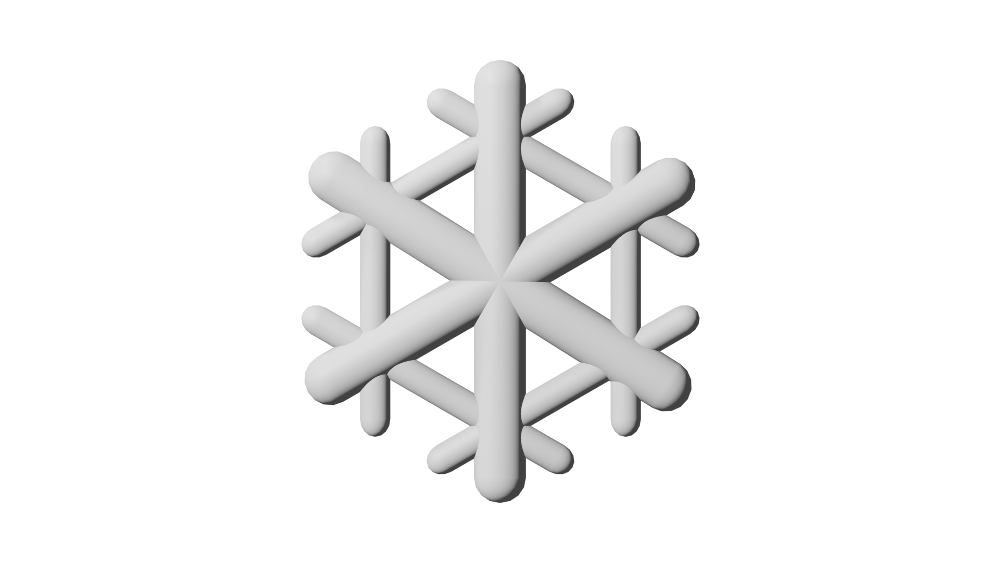

How do mountains form?
Create your own mountain and see the process for yourself!
This is the Earth. It has many layers under the surface, and everything is constantly in motion.
Plate Drift
Move the plates closer together!


xxx
xxxxxxxxx!


Now, let’s see you create your own mountain!


